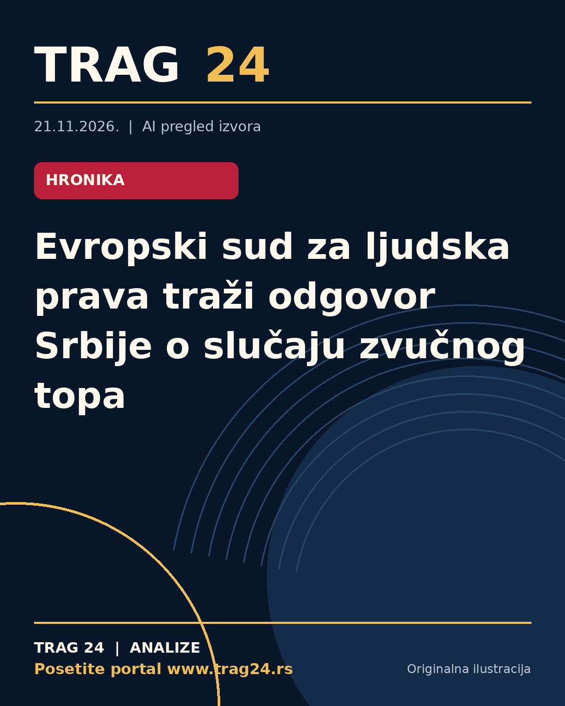

Evropski sud za ljudska prava traži odgovor Srbije o slučaju zvučnog topa

ŠTA SE DOGODILO
Evropski sud za ljudska prava zahtevao je od Srbije da se izjasni do 15. januara o slučaju zloupotrebe tzv. zvučnog topa tokom protesta u Beogradu 15. marta prošle godine. Više od 150 građana je dalo iskaze tužilaštvu tvrdeći da su povređeni usled upotrebe određenog sredstva na protesta.
HRONOLOGIJA
Nakon događaja od 15. marta, građani su podneli brojne krivične prijave. Međutim, tužilaštvo je predmet okončalo službenom beleškom koja nije dostavljena oštećenima niti podnosiocima krivičnih prijava, već je „stavljena u fioku“. Postojanje te beleške saznato je tek nakon objavljivanja izveštaja komisije Vrhovnog javnog tužilaštva. Komisija je u izveštaju utvrdila mnoge nedostatke u istrazi, ali se izveštaj nije bavio samim postupkom ubitku, već pre odgovornošću tužilaca.
ŠTA NAVODE IZVORI
Vladica Ilić iz Beogradskog centra za ljudska prava ukazao je na nejasnoću sudbine istrage i ocenio da predmet treba da preuzme Tužilaštvo za organizovani kriminal, budući da je neophodno ispitati ne samo upotrebu sredstva već i ko je to planirao, u koje svrhe i da li je bilo prikrivanja podataka. Takođe je ukazao da postoji sumnja na počinjenje više krivičnih dela, moguće i iz oblasti organizovanog kriminala. Ilić je naveo da su organi vlasti, uključujući i predsednika Republike, imali interes da negiraju očigledne činjenice u ovom slučaju.
ŠTA JE POTVRĐENO
Potvrđeno je da je Evropski sud za ljudska prava uputio Srbiji zahtev za izjašnjenje do 15. januara vezan za slučaj "zvučni top". Takođe je potvrđeno da su građani podneli više od 150 iskaza i da je tužilaštvo predmet okončalo službenom beleškom koja nije dostavljena oštećenima. Izveštaj komisije Vrhovnog javnog tužilaštva sadržavao je nalaz o postojanju brojnih nedostataka u istrazi.
ŠTA NIJE POTVRĐENO
Nije potvrđeno kakva će biti dalja sudbina istrage, odnosno da li će Tužilaštvo za organizovani kriminal preuzeti predmet ili da li će biti donesene nove odluke o gonjenju. Takođe, konkretni detalji vezani za sadašnje postupke i bilo kakve eventualne optužnice nisu dostupni u dostavljenim izvorima.
ŠTA OSTАJE OTVORENO: Ostaje nejasno da li će istraga biti nastavljena i u kom obimu, ko će biti njeni akteri, kao i da li će biti ispitana moguća odgovornost pojedinaca iz organa vlasti. Takođe nema informacija o eventualnim rezultatima postupka ili daljim koracima državnih institucija povodom slučaja "zvučni top".
Izvori
- https://n1info.rs/vesti/ilic-sud-u-strazburu-dao-srbiji-rok-do-15-januara-da-se-izjasni-o-zvucnom-topu/
- https://insajder.net/prenosimo/vladica-ilic-bcljp-sud-u-strazburu-dao-srbiji-rok-do-15-januara-da-se-izjasni-o-zvucnom-topu
Ova analiza je pripremljena uz pomoć veštačke inteligencije na osnovu javno dostupnih izvora. Navodi izvora nisu nužno nezavisno potvrđeni.